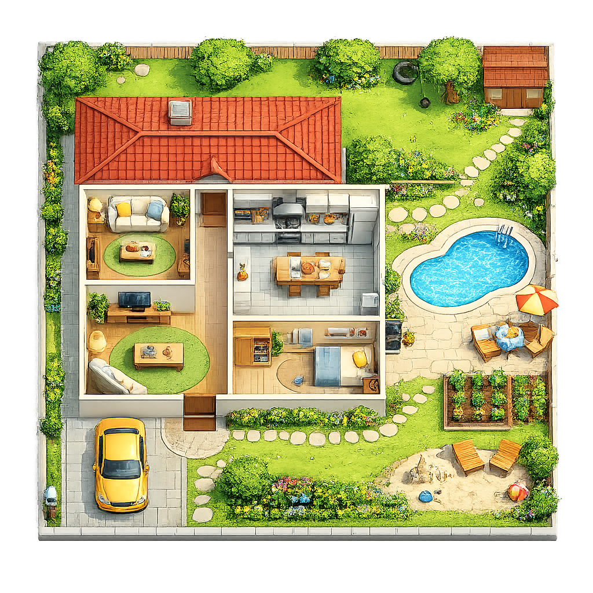
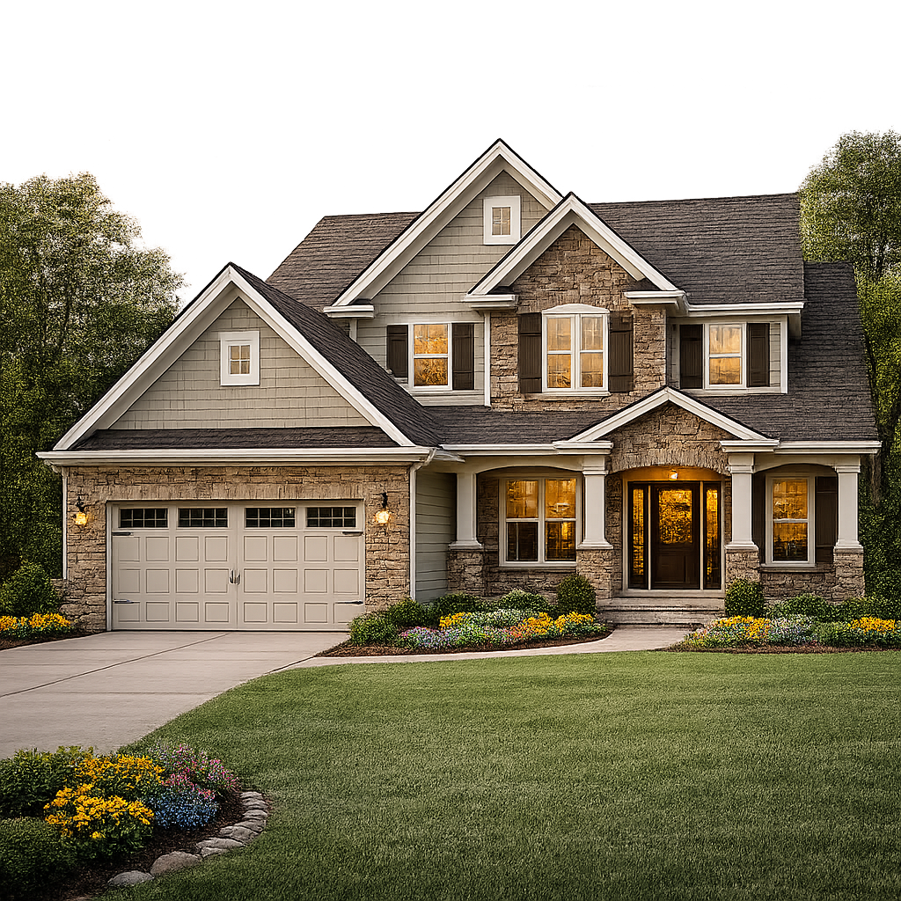
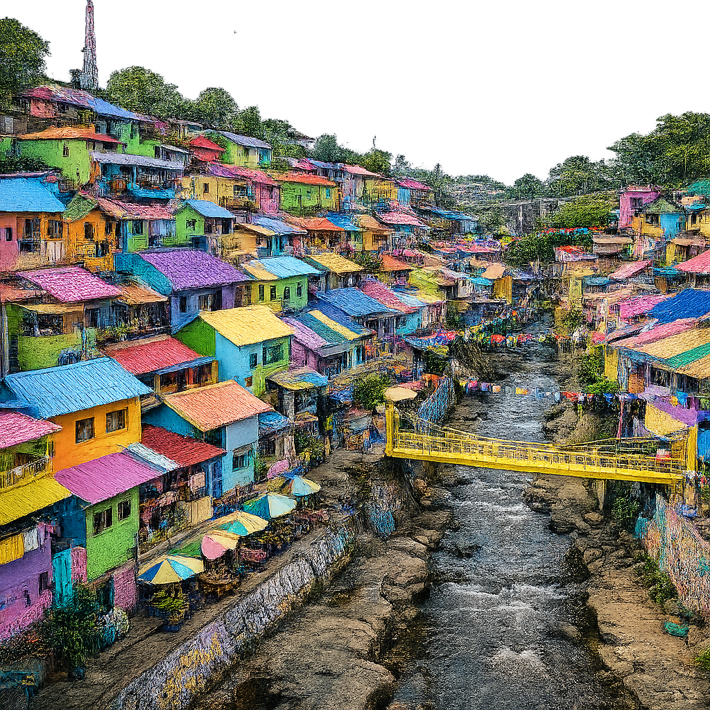
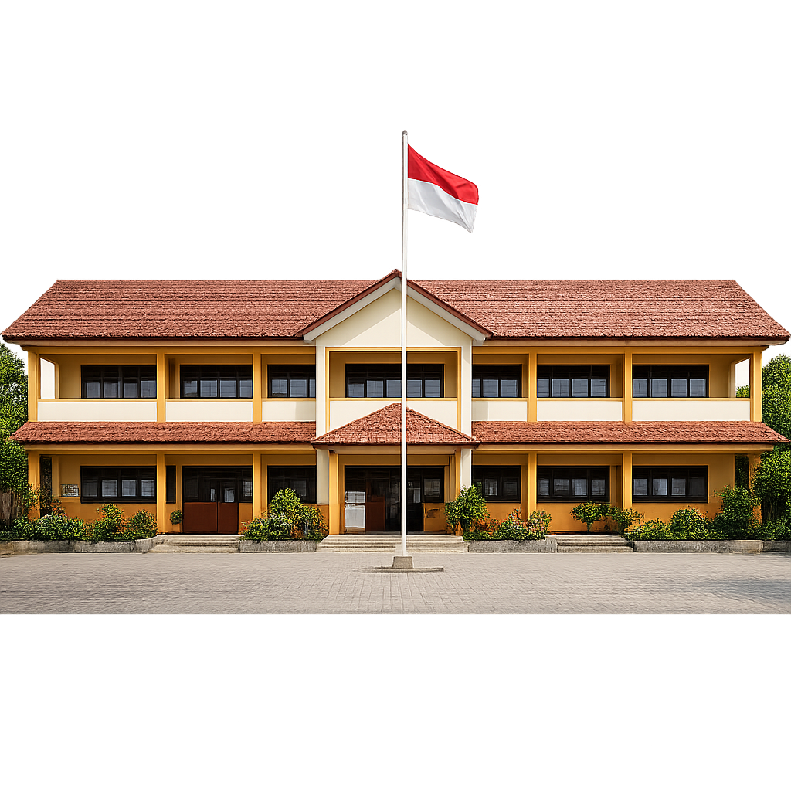
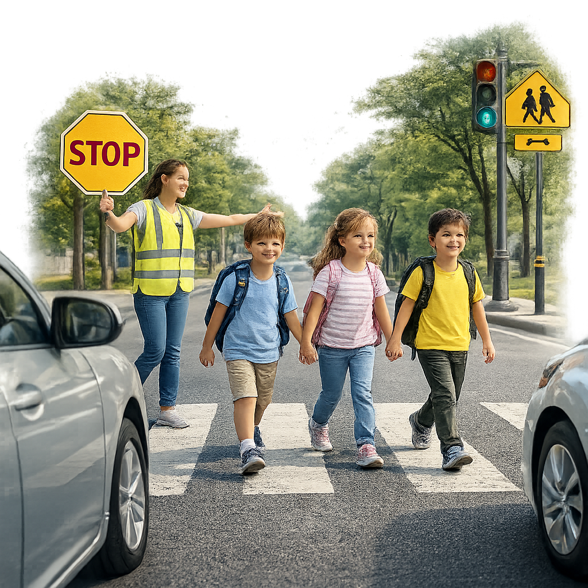
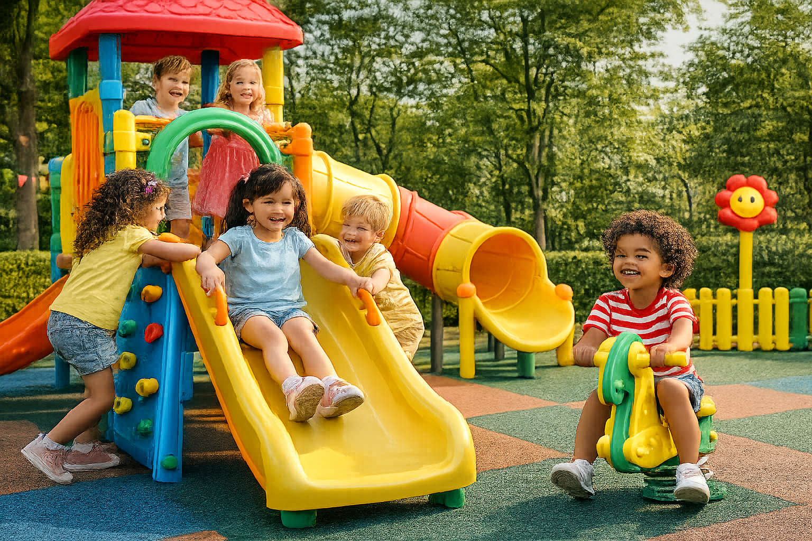
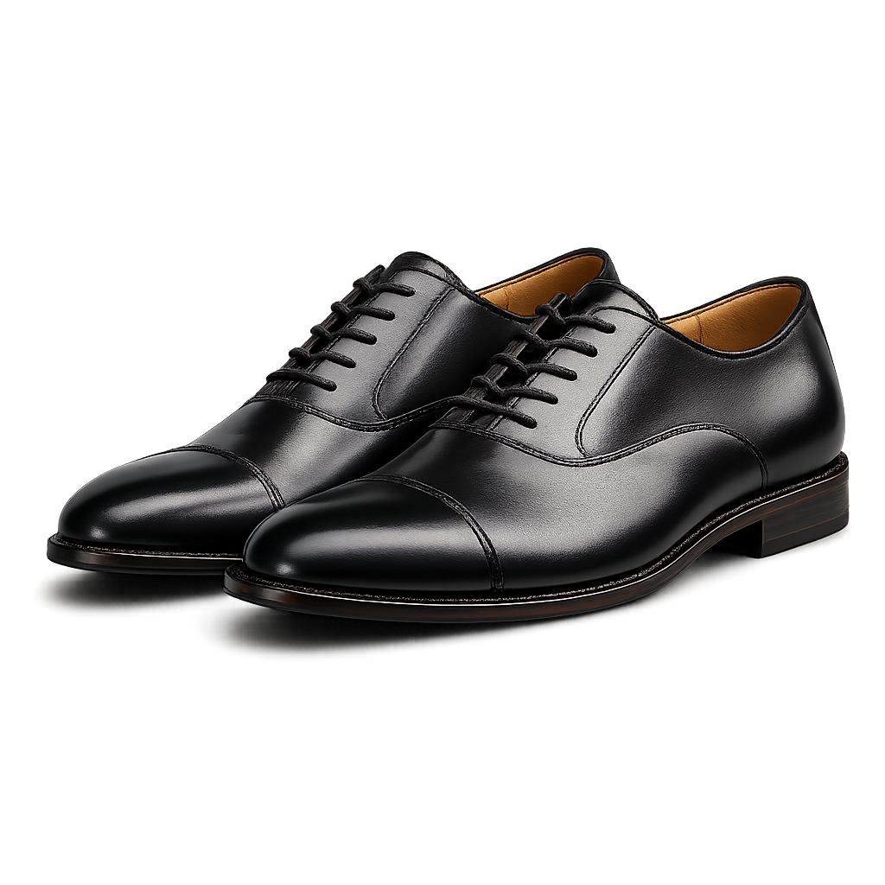

📖 Cerita & Foto Asli
Bayu, peta rumah, polisi, satpam, hati-hati di luar, rumah warna-warni.
 peta rumah
peta rumah
peta rumah bayu
rumah
rumah warna warnipolisi
satpam

sekolah
jalan aman
permainan amantruk mainan

sepatumobil
✏️ Latihan
Gambar peta rumahmu
Aturan aman di jalan?
📱 Belum selesai